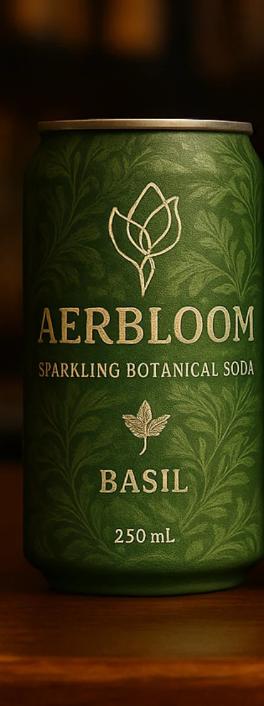
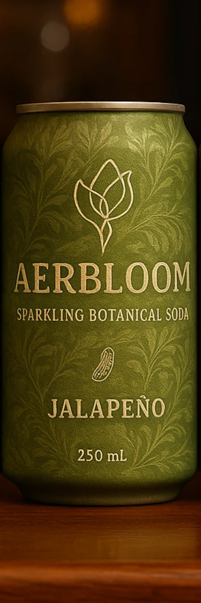
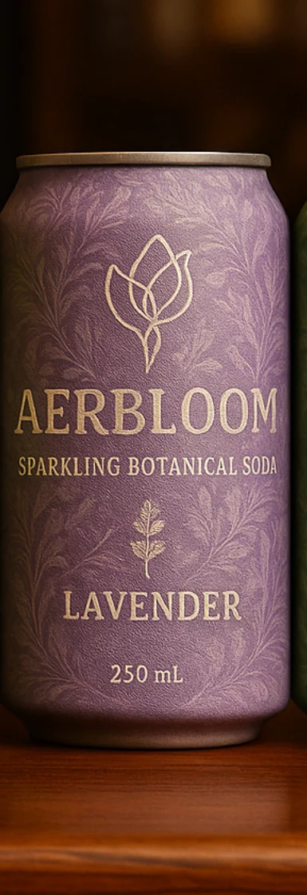

Signature flavor
Basil
Herbal, lemony, fresh — the heart of the Aerbloom garden.
AERBLOOM
Sip it solo, or build something beautiful
Aerbloom reimagines modern carbonation through artistry, flavor, and design. Founded in Venice Beach by two bartenders, the brand brings real botanicals, natural elegance, and sensory depth into a format that feels equally at home on the beach, at the dinner table, behind the bar, or poured in stemware as a zero-proof aperitif.

The flavor line
The collection revolves around Basil, the brand's signature expression of freshness and authenticity, and expands into four complementary moods: Cucumber for purity, Jalapeño for brightness, Rosemary for structure, and Lavender for calm. Each flavor is designed to stand on its own or work beautifully with fine spirits.

Signature flavor
Herbal, lemony, fresh — the heart of the Aerbloom garden.

Aromatic depth
Resinous, dry, and citrus-zesty with quiet structure.

Energy & brightness
Green, tangy, lightly spicy, and built with lift.

Serenity & calm
Floral, soft, and soothing with a poised finish.

Purity & clarity
Crystal-clear, pure, aquatic, and beautifully cooling.
Signature expression
Aerbloom Basil was conceived to taste like freshly picked basil leaves rather than the cooked, licorice-like profile often created by heat-distilled oils. Through cold maceration and a bright citrus structure, it opens green, luminous, and alive — the clearest expression of the brand's philosophy of natural sophistication.

The story
Aerbloom was founded in 2025 from the shared curiosity and creative partnership of Jeremiah Rosenthal and Blaise Bardissa. What began in the cocktail and nightlife world became a new point of view on carbonation: one that treats refreshment as a sensory ritual rather than a purely functional act.
The name itself is a dual homage — part heirloom, part aer + bloom — expressing craft heritage, lightness, natural effervescence, and botanical vitality. The emblem, a flower becoming a bird, reflects grounded nature and airborne creativity: growth, vitality, freedom, and elegance that feels natural rather than manufactured.
Where Aerbloom lives
Aerbloom gives beverage programs something beyond tonic, ginger beer, or industrial juices: a botanical mixer with story, visual refinement, and a real point of view.
Designed to feel grown-up and intentional even without alcohol, each can delivers the ritual, depth, and sensory pleasure of a crafted drink in a non-alcoholic format.
With quiet luxury design, botanical flavor profiles, and a collectible can presence, the range is built to stand apart in boutique groceries, specialty markets, and design-forward retail.
Shared technical DNA
Target sugar per 250 mL can for a profile that feels bright rather than heavy.
A crisp acid structure designed to keep the flavors lively and polished.
Carbonation calibrated for lift, texture, and a refined sparkling finish.
Sleek aluminum can format intended for both hospitality and premium retail.
Why Aerbloom stands apart
Bridges the gap between soda, mocktail, and mixer — designed for drinking rituals rather than one narrow use case.
Built around real plant extracts, pure cane sugar, natural color direction, and clean-label transparency.
Combines botanical craft with visual refinement, turning each can into an object of design as much as refreshment.
FAQ
Aerbloom is a premium sparkling botanical soda designed to blur the line between soda, mocktail, and mixer. It is meant to feel elegant and complete on its own while remaining useful in cocktails and low-ABV service.
Both. The flavor line was intentionally developed for dual use: refreshing on its own as a grown-up soda and versatile enough to pair naturally with spirits in hospitality settings.
The opening line centers on Basil and expands with Rosemary, Jalapeño, Lavender, and Cucumber — each one carrying a distinct mood while sharing the same botanical design language.
Aerbloom was built for bars, hotels, restaurants, premium retailers, and consumers who want a non-alcoholic option with as much beauty, intention, and flavor depth as a crafted cocktail.
The initial focus is Los Angeles' coastal market — Venice, Santa Monica, and Marina del Rey — before expanding across California and then outward in a measured, hospitality-led way.